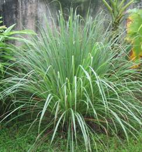

AGR 301:: Lecture 20 :: CITRONELLA (Cymbopogon winterianus))

Area under cultivation
The crop is grown in the states of Assam, Gujarat, Jammu & Kashmir, Karnataka, Maharashtra, Tamil Nadu, West Bengal and Uttar Pradesh.
Family: Poaceae
Plant Discription
It is a tufted aromatic perennial herb with fibrous roots, erect over 2 m tall, with smooth leaves and bearing a large inflorescence.
Centre of Origin: Sri Lanka
Soil
The species has been found to grow well under varying soil conditions, but the sandy loam soil with abundant organic matter is the most suitable. Heavy clay soils and sandy soils do not support good growth of the plant. The plant has been found to grow well under a pH range of 5.8-6.0. Although 180-120 m altitude is optimum, the plants are reported to grow well at the altitudes between 1000-1500 m.
Climate
Citronella thrives well under the tropical and subtropical conditions. It requires abundant moisture and sunshine for good growth. A good rainfall of about 2000-2500 mm well spread over the year and high atmospheric humidity, appear to influence the growth of the plant, yield and quality of the oil favourably.
Varieties
Mandakini
Clonal selection, gives a little less herb yield (35 t/ha) and oils (118 kg/ha). the variey is suitable for hills and Tarai tracts of Himalayas (CIMAP, Lucknow).
Manjusha
Clonal selection, gives a herbage yield of 43 tons/ha. and 150 kg/ha of oil per annum. The variety is suitable for indo-gangetic plains (CIMAP, Lucknow).
Manjiri
This variety has been released by University of Agriculture Sciences, Bangalore. It is an elite mutant clone of Manjusha M3-8. It has been found to possess 50-90% more oil, high cirtonellol and low elemol content. It has profuse tillering and rapid growing ability thus producing a high herb yields.
CIMAP Bio-13, Java-2, Jorhat-2
High yielding varieties for the southern and eastern India released by CIMAP.
Propagation
Citronella is a perennial grass, however, it does not produce viable seeds, therefore, the species can be propagated only vegetatively by slips. This is achieved by splitting well-grown clumps. It has been observed that an year old clump yields on an average about 50 slips. The clump is gently separated into a number of slips and each slip contains 1-3 tillers. These slips are the unit of propagation and on planting establish themselves as plants or bushes. Fibrous roots and leaves should be trimmed off the slips before planting.
Season of Planting
Although the plantation of Java citronella can be initiated anytime during the year, onset of monsoon is the best time. The land should be prepared to fine tilth by discing and tilling. There should be enough moisture in the field at the time of planting.
Spacing
The slips should be planted at a distance of 60 cm x 60 cm apart. However, in areas where the soil is very fertile and the climatic conditions support luxurious growth, a spacing of 90 cm x 90 cm may be followed.
Method of Planting
The slips should be taken from healthy, vigorously growing and young bushes and should be planted soon after the bushes have been dug up and the slips have been separated out. If the planting is delayed, the slips may partially dry up resulting in poor plant population. The slips are planted vertically, about 10 cm deep. The planting should be done in such a way that the excess water is drained off quickly. This is because plants are extremely sensitive to temporary waterlogging, which adversely affects the growth of the plant. It is better to plant citronella on ridges to avoid waterlogging. The field should be irrigated immediately after planting if there are no rains within next 24 hours.
Intercultural Operations
The citronella plantations should be kept weed free. When the plants have established themselves and formed bushes, the problem is not so severe because of the very nature of growth of the bushes. The bushes do not allow weeds to grow around them by cutting off the sunlight. However, in the newly established plantations and after each harvest, the weeds grow in the inter-row spaces and weeding is essential. This can be economically accomplished by running cultivator in between the rows.
Irrigation
Java citronella requires sufficient moisture for good growth and yield of the leaves. In the areas where annual rainfall is about 200-250cm, well distributed over the year and the humidity is high, supplemental irrigation is not necessary. In drier months, however, irrigation is provided twice a week during the first month of planting and thereafter once in 5 days.
Manuring & Fertilization
Java citronella generally requires high dose of nitrogen for good growth. Under the agroclimatic conditions of North-Eastern India and North India, 80-120 kg N /ha per year is recommended. For the soils with high fertility level, the dose may be reduced. The recommended annual doses of P and K are 40 kg/ha each. It is beneficial to apply N in 4 equally split doses, the first about a month after planting and then after each harvest, at an interval of about three months. In poor soils, 200 kg N and 80 kg P 0 per ha should be applied. Nitrogen is applied in 5-6 split doses.
Harvesting
Citronella is cultivated for essential oil. Although, all the plant parts contain oil, leaves contain the maximum amount of oil. Therefore, only the leaves should be harvested. Harvesting is done by sharp sickle at about 20-45cm above the ground. The number of harvests, which can be taken during a year, depends upon the growth of the plants. Under favourable conditions, upto 4 harvests can be obtained in a year. The leaves are ready for first harvest, about 6 months after planting. The second and subsequent harvests can be taken thereafter at 2.5 -3 months interval. Harvesting too soon and too late affects the quality of oil adversely. The delay also causes the leaves to dry up resulting in decrease in yield of oil. While harvesting, only the leaf blade should be cut and the sheath should be left. This is because the sheath contains only little and poor quality oil. Flowering should be discouraged as it causes aging in plants and reduces their life span. The same schedule of harvesting is to be followed during second and subsequent years. The Java citronella plantations remain productive for 5-6 years but the yield of leaves and oil is highest during second and third years, after which it starts decreasing. It is recommended that the plantation should be uprooted after 3-4 years and rotated with some small legume species. Horsegram is a very good rotational crop in south, cowpea or sunhemp (Crotalaria species) is recommended for north Indian plains.
Yield
On an average, the oil content is about 1% on the basis of fresh weight of leaves. Depending upon the nature of growth, the yield of fresh leaves is about 15-20 tonnes/ha in the first year and 20-25 tonnes/ha in the second as well as in the third year, after which the yield declines. The yield of oil obtained during the first year is about 100 kg/ha and 150 kg/ha during second and third years. Under very favourable conditions, yield of 200-250 kg oil/ha can be obtained.
Uses
The oil is used mostly in perfumery, both directly and indirectly. Soaps, soap flakes, detergents, household cleansers, technical products, insecticides, etc are often perfumed exclusively with this oil. It is also a valuable constituent in perfumery for soaps and detergents. Citronellal is occasionally used in traces in flower compositions of the citrus, cherry, ginger, etc. However, the greatest importance of Citronellal lies in its role as a starting material for further derivatives. Hydroxycitronellal can be prepared from citrinellal and it is a key ingredient in compounding. Hydroxycitronellal is one of the most frequently used floralizing perfume materials. It finds its way into almost every type of floral fragrance and great many non-floral ones. For soap perfumes, a slightly rougher grade is used. High grade is used in flavour compositions.
Oil Contents
Chemical constituents of Java type |
|
Chemical |
Percentage |
Citronellal |
32-45% |
Geraniol |
12-18% |
Geranyl acetate |
3-8% |
Citronellyl acetate |
2-4% |
Linalyl acetate |
2% |
1-limonene |
2-5% |
Caryophyllene |
2.1% |
Linalool |
1.5% |
Farnesol |
0.6% |
Methylisoeugenol |
2.3% |
Post Harvest Technology
Distillation
The grass is steam-distilled for better recovery of oil and economical purposes. The distillation equipment consists of a boiler in which steam is produced, a distillation tub for distilling the grass, a condensor and 2-3 receivers /separators. The distillation tub is made steel with a perforated bottom, which of mint called false bottom, on which the grass rests. It has two opening: one at the bottom forsteam entry and the other at the top through which the oil vapour and steam escape. The top of the still is fitted with a lid, which is removable. Charging and discharging of the grass is done in perforated cages with chains. These cages may be lowered in the tub with the help of chain-pulley system. Tubular condensers oil vapours, coming out from the distillation tub, enter from the top of the condenser and cool down while passing through the tubular tubes. Oil and water vapour after condensation are led to a receiver where the oil separates out from the water and floats on the top and is drawn off.
The harvested grass sometimes contains dead leaves. These should be removed. The remaining leaves are cut into shorter lengths. This reduces the volume of the grass and facilities firm and even packing within the still. Further, chopping the grass gives a higher yield of oil compared to uncut grass. Generally, distillation is complete within 21/2 to 3 hours under normal pressure starting from the initial condensation of the oil. About 80% of the total oil yield is recovered in the first hour, 19% in the second hour and about 1% in the 3rd hour, of distillation. Larger percentages of the major components in the total oil, such as citronellal, geraniol, citronellal and geranyl acetate are recovered on the first hour of distillation.
Growers cultivating smaller areas can make use of properly designed direct-fired stills, in case they are not able to invest in the purchase of a boiler. In such cases, the lower portion of the distillation tub is filled with water and this function as a boiler. The water in the boiler is separated from the remaining part of the still by means of a false perforated bottom on which the grass rests. In the still, the water does not come in contact with the grass. The tub is heated from below either by wood or coal and the steam thus produced passes through grass place above in the tub carrying oil vapours with it. However, distillation in such direct-fire still takes a little more time and the quality of the oil is also inferior. Java citronella oil should preferably be stored in glass /aluminum containers.
Multiple choice questions
- Citronella is a ___________
a. Perennial b. Annual c. Biennial - Method of citronella propagation is ________
a. Vegetative b. Runners c. Stolons - Soil suitable citronella cultivation is __________
a. Sandy loam b. Clay loam c. sandy soil
| Download this lecture as PDF here |